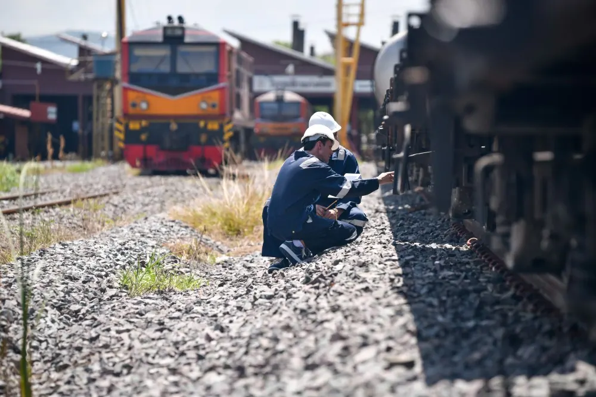
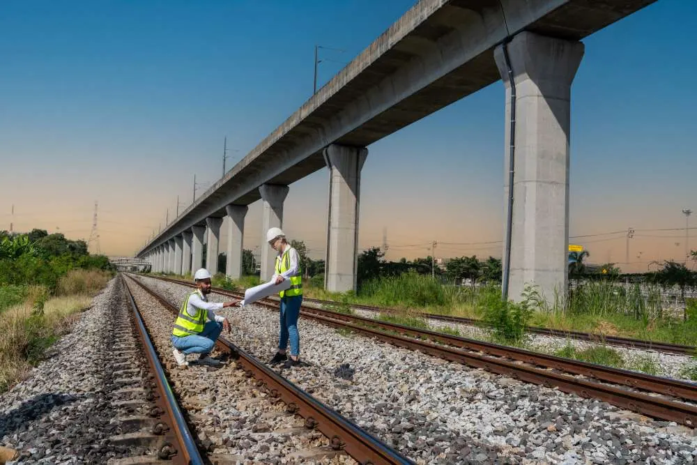
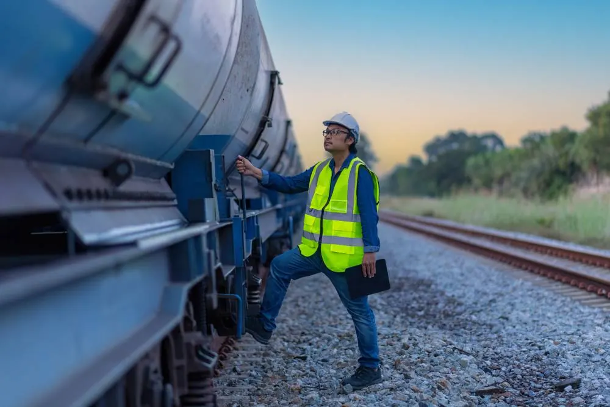
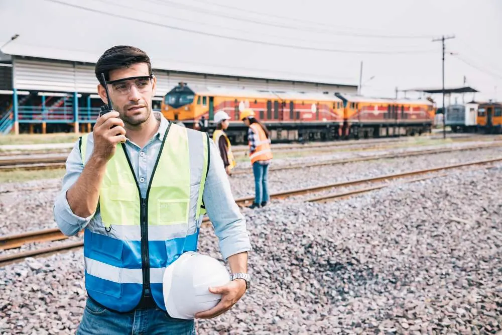
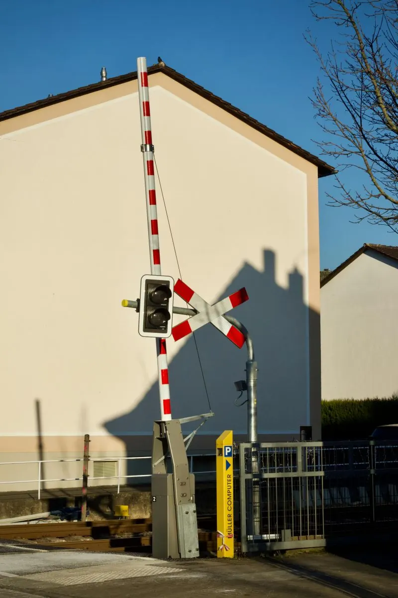
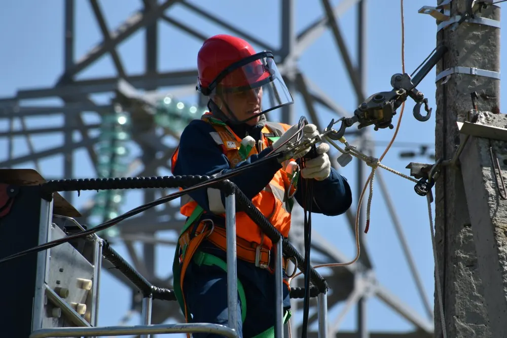
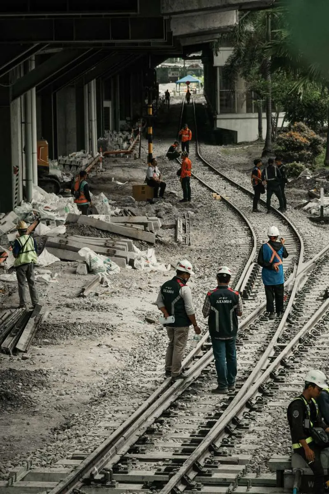
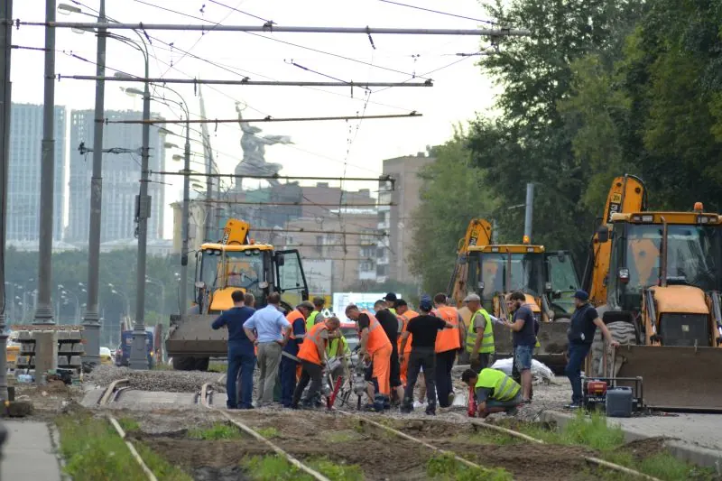
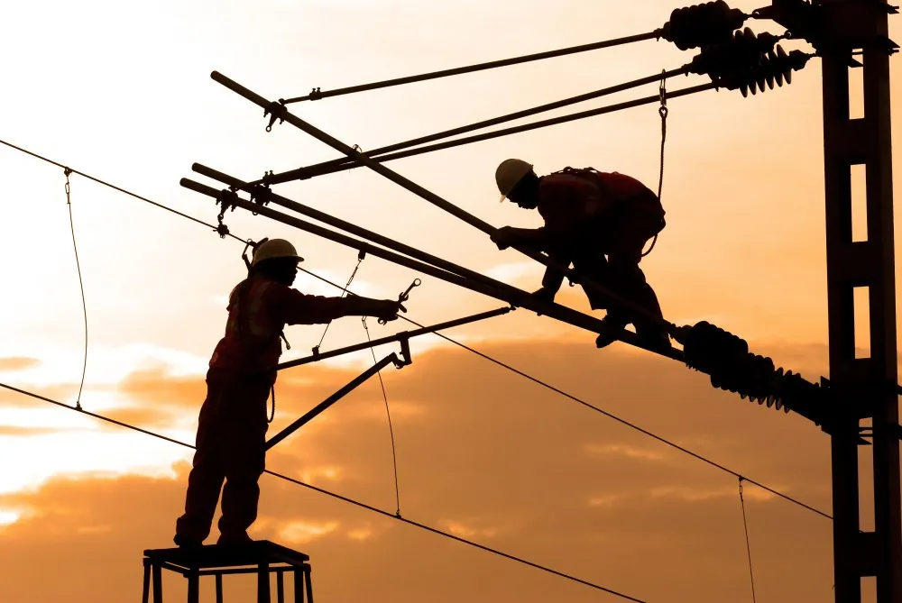
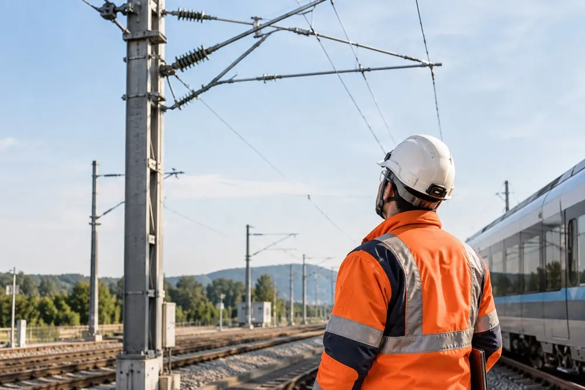

SECUFER – Sécurité ferroviaire
Les règles de sécurité ferroviaire à maîtriser avant d’accéder aux emprises du réseau.
160 €TTC
Catalogue
12 formations et 5 packs, filtrables par type, thème et durée. Les tarifs affichés sont TTC, par personne.
Pas sûr de la formation à choisir ? Parlez-en au gestionnaire de formations ferroviaires.
07 80 98 89 2007 44 30 73 56Standard : 01 89 70 55 70
Décrire mon besoin17 résultats
Les règles de sécurité ferroviaire à maîtriser avant d’accéder aux emprises du réseau.

RecyclageUne demi-journée pour remettre à jour vos connaissances SECUFER et renouveler votre attestation pour 3 ans.

E-learning
Cinq jours pour tenir le poste d’Annonceur Sentinelle et d’Agent Sécurité du Personnel sur les chantiers du réseau ferré.

RecyclageL’évaluation annuelle qui permet à l’employeur de maintenir l’habilitation Annonceur Sentinelle / ASP.

Les prestations connexes C0, Agent prestataire LAM et S9, réunies dans une même formation TSAE.

Le risque électrique des installations de traction, à connaître avant de travailler aux abords des voies.

La formation d’agent S9A3, avec les fonctions RZT, AGEC/R et APN.
Représenter la sécurité opérationnelle et coordonner les opérations sur un chantier ferroviaire.

L’autorisation exigée pour intervenir à proximité des réseaux enterrés ou aériens.

Assurer la protection des passages à niveau pendant les travaux.

Intervenir comme percheur ou aide monteur sur les chantiers caténaire, niveau CH1-CB1.

PackTCS M + C0 / LAM / S9
TCS M Annonceur Sentinelle + ASP · Risques électriques C0 · Agent Prestataire LAM · Agent Prestataire S9

PackC0 + TCS M
Risques électriques C0 · TCS M complet (Annonceur + ASP)
Représentant Sécurité Opérationnelle
SECUFER · TCS M / ASP · RSO

PackTCS M Annonceur Sentinelle + ASP · Agent Prestataire LAM · Agent Prestataire S9 · Agent de Protection Électrique Caténaire (APEC) CH1-CB1

PackTCS M + APEC
TCS M Annonceur Sentinelle + ASP · Agent de Protection Électrique Caténaire (APEC)
Voie sans issue
Aucune formation ne correspond à ces critères. Élargissez la recherche, ou posez directement la question à Digivoda.
En intra, la session se tient sur votre site et ne réunit que vos agents. Indiquez le nombre de participants pour recevoir un devis.